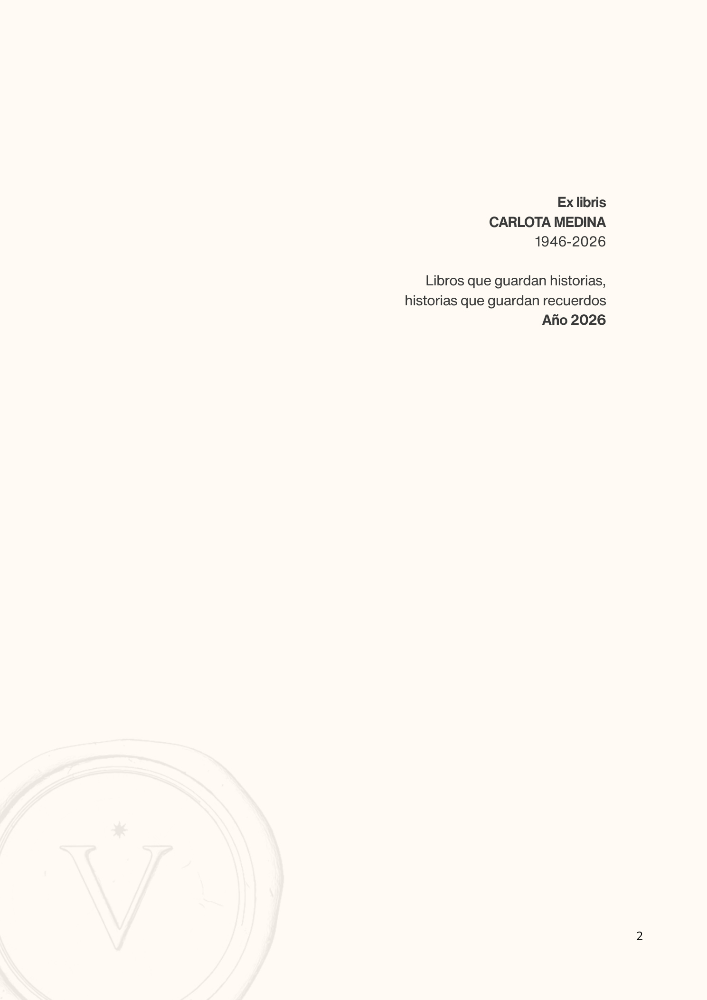
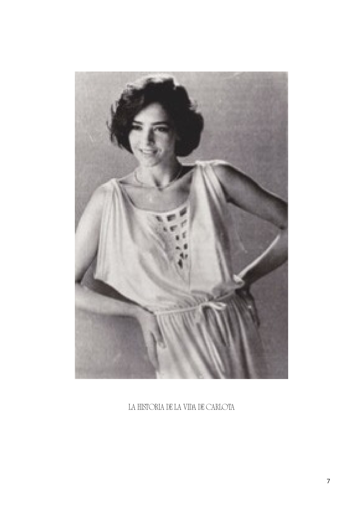
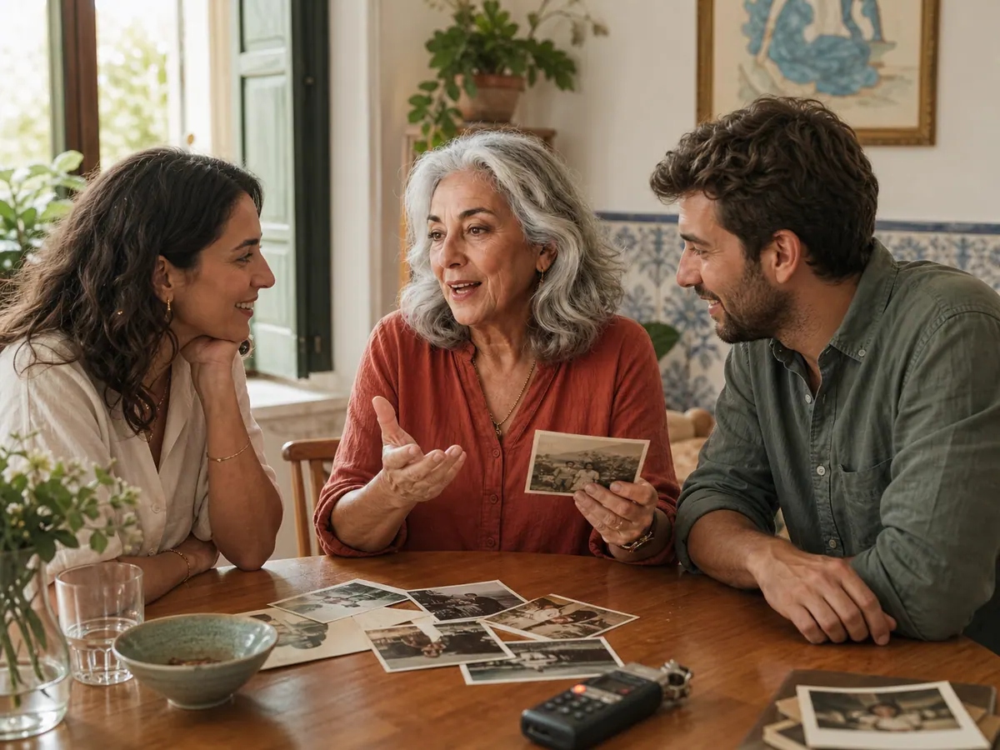
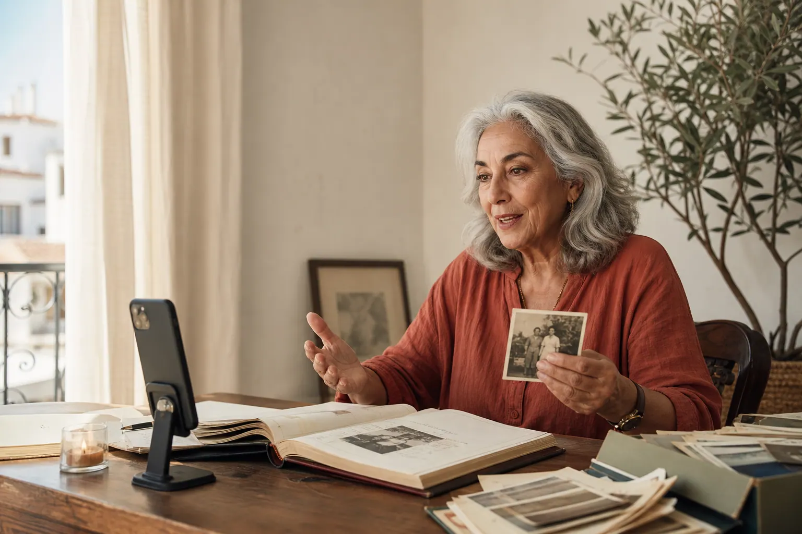
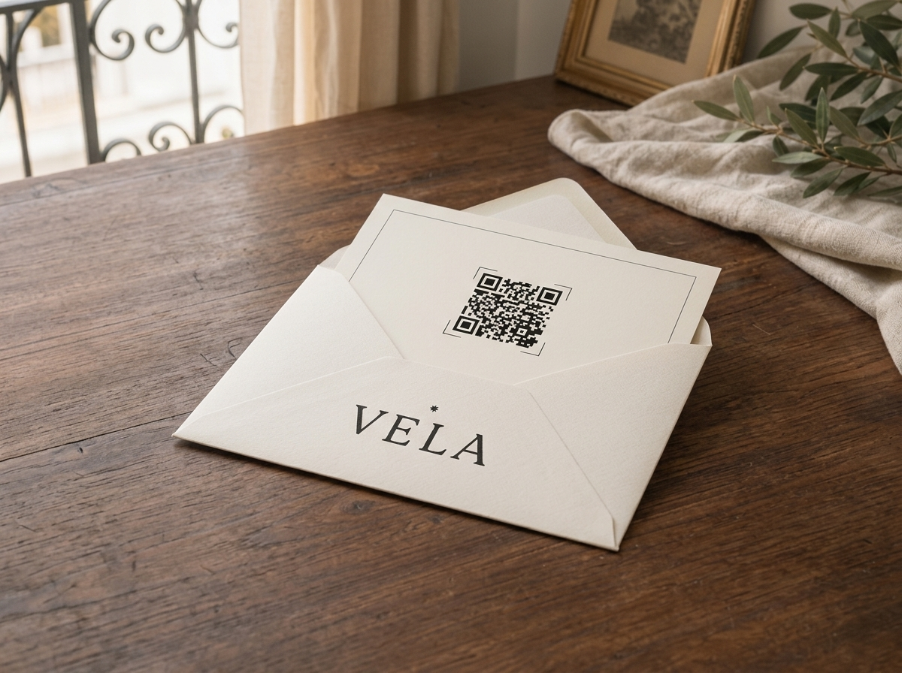
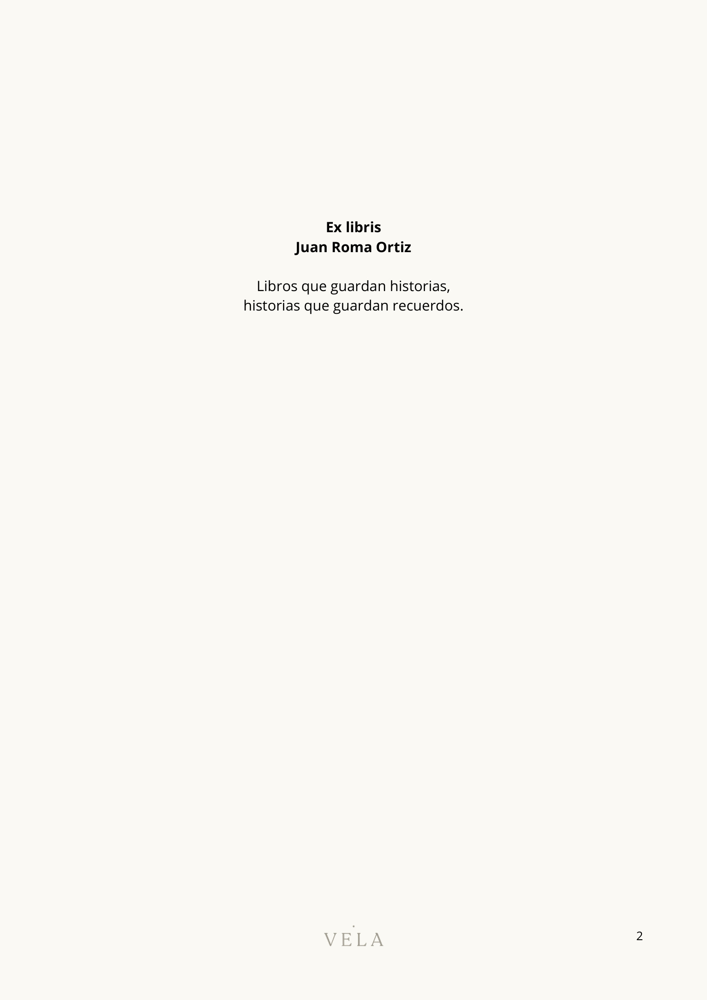
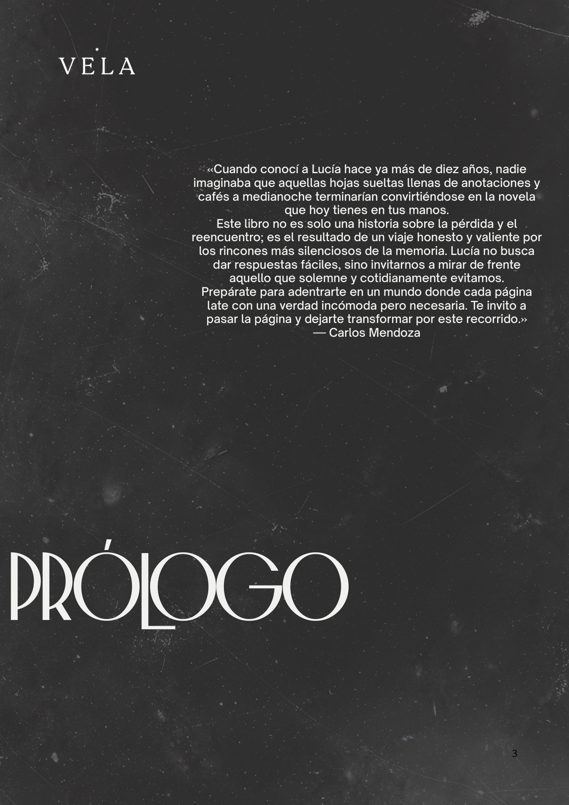
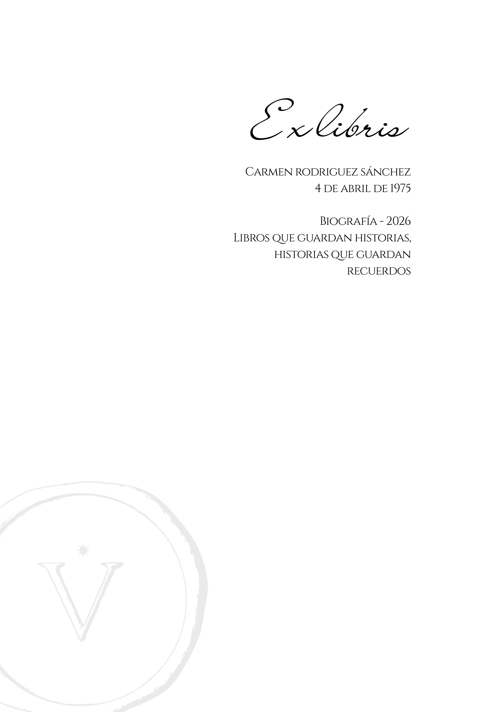
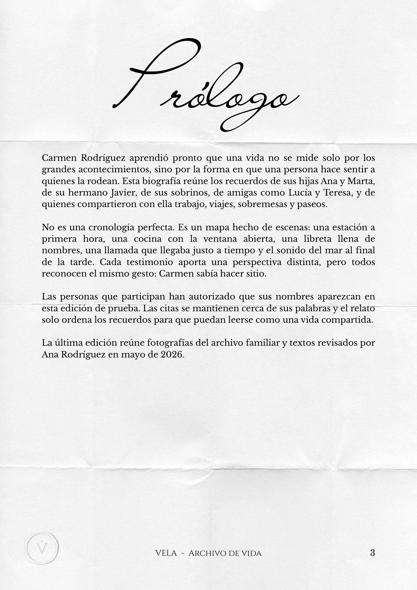

Elige un sobre, abre una historia y entra en la biografía digital que VELA ha creado a partir de recuerdos, fotografías y palabras.
Una pequeña colección de vidas, presentada como una experiencia editorial viva.
Desliza para recorrer la estantería o selecciona un sobre.
Edición digitalCapítulosPDF · QR
Explora con el cursor o desliza
Preparando el archivo···
La experiencia 3D no está disponible. Puedes explorar la vista editorial.
ARCHIVO DE HISTORIASElige una vidaAbre un sobre para entrar en su memoria.
PLANTILLA NUDECarlotaLa historia de una vida plena
Mueve para explorar · selecciona un sobre


CAPÍTULOOrígenes01
CAPÍTULOOrígenes01
Orígenes01
Infancia02
Momentos clave03
Legado04
VELANUDE
01Una vida plena
02Cálida, elegante y atemporal
03Lectura digital · PDF · QR
Historias reales, tres formas de contarlas.
Cada persona tiene una cadencia y una sensibilidad propia. Aquí puedes recorrer las páginas interiores de nuestras tres colecciones editoriales antes de abrir su edición interactiva completa.

Sobremesas

Raíces

Para siempre
Carlota Medina García · Colección Nude
La historia de una vida plena
Un relato luminoso y sereno construido a partir de conversaciones breves, recetas anotadas y memorias compartidas por sus hijos. Papel marfil cálido y márgenes respirados.
Contrastes sobrios en tinta oscura, retrato editorial y estructura firme por décadas. Pensada para biografías llenas de oficio, criterio propio y aprendizaje familiar.
Capítulos: Orígenes · El carácter · Una vida plena · Lo que permanece


Pliego 1 de 3 · Ex libris y prólogo de Carlos Mendoza
Carmen · Colección Letter
Una vida hecha de pequeñas historias
Inspirada en el papel epistolario clásico y los álbumes anotados en casa. Perfecta cuando hijos y nietos envían voces y recuerdos desde distintas ciudades.
Capítulos: La carta · Familia · Viajes y hallazgos · Para siempre


Pliego 1 de 3 · Ex libris y prólogo familiar
¿Listo para empezar a escribir su legado?
Nuestra inteligencia artificial te acompañará paso a paso para reunir recuerdos familiares y convertirlos en
una edición para siempre.